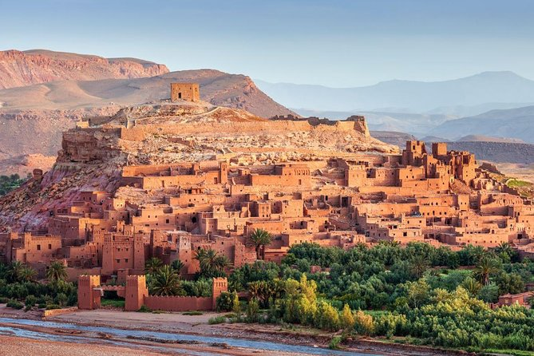
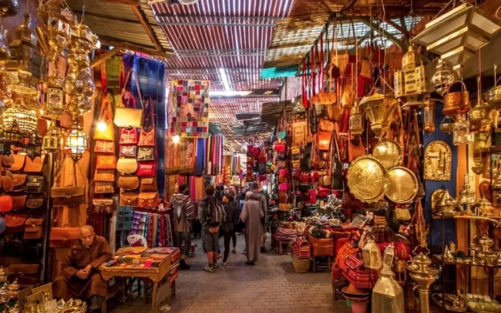
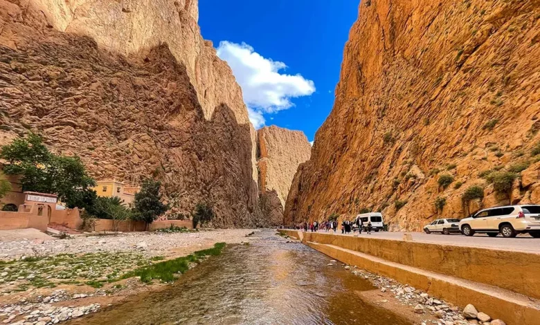
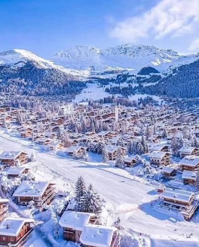
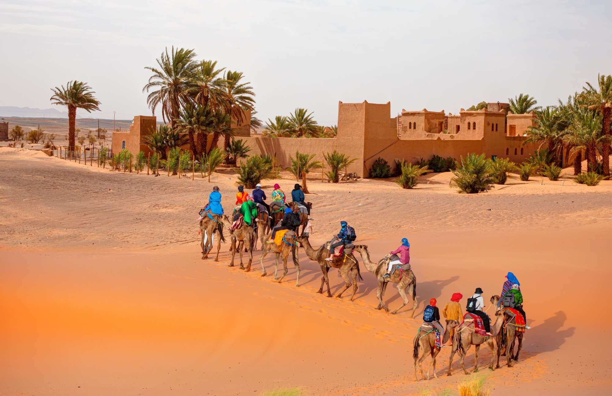
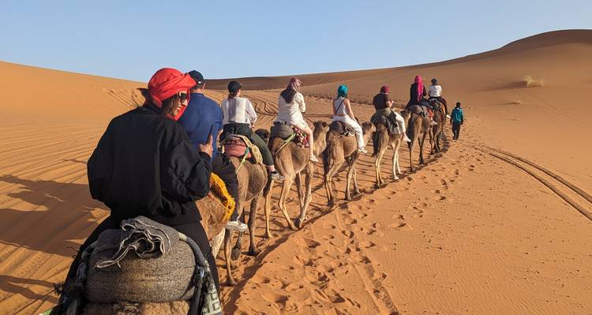
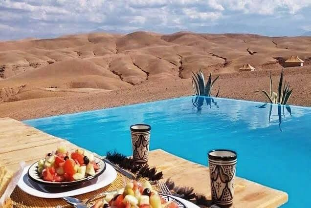

De los zocos de Marrakech a las dunas doradas del Sahara, pasando por cañones, kasbahs y pueblos de montaña: todo lo que necesitas saber antes de tu viaje, contado por un equipo local nacido en el desierto.

El turismo en Marruecos gira en torno a cinco grandes experiencias: la medina y los zocos de Marrakech, las kasbahs y gargantas del Alto Atlas, el desierto del Sahara en Merzouga, la medina medieval de Fez y la ciudad azul de Chefchaouen. La mejor época es primavera y otoño, con 3 días es suficiente para una primera aproximación y con 7-10 días puedes recorrer lo esencial del país combinando ciudades, montaña y desierto.
Pocos países ofrecen tanta variedad de paisajes y culturas en un espacio tan reducido. En Marruecos puedes despertar en una ciudad imperial de más de mil años de historia, comer con vistas a las montañas nevadas del Atlas al mediodía, y esa misma noche dormir bajo un cielo estrellado en pleno desierto del Sahara. A esto se suma una cultura viva -zocos llenos de artesanía, té a la menta compartido con desconocidos, música bereber junto al fuego- que convierte cada viaje en una experiencia sensorial completa, no solo visual. Y todo ello a solo unas horas de vuelo desde Europa, con un cambio horario mínimo y un coste de vida mucho más bajo que en la mayoría de destinos europeos.
Para la inmensa mayoría de viajeros, Marrakech es el punto de partida. Su medina, Patrimonio de la Humanidad, esconde la plaza de Jemaa el-Fna -declarada Patrimonio Cultural Inmaterial por la UNESCO- y un laberinto de zocos donde se venden desde lámparas de latón hasta especias, cuero y alfombras bereberes. Alrededor, palacios como la Bahía o jardines como el Majorelle completan una ciudad que combina historia, arte y una vida nocturna que no se detiene. Marrakech es también la base logística perfecta: desde aquí salen la mayoría de las excursiones hacia el Atlas, Essaouira y el desierto del Sahara, algo que aprovechamos en todos nuestros tours desde Marrakech.
Saliendo de Marrakech hacia el sureste, la carretera cruza el Alto Atlas por el histórico puerto de Tizi n'Tichka, con vistas espectaculares sobre pueblos bereberes construidos en la ladera de la montaña. La primera gran parada es casi siempre la kasbah de Ait Benhaddou, una aldea fortificada de adobe declarada Patrimonio de la Humanidad y escenario de decenas de películas y series internacionales. Más al sur, el Valle del Dadès ofrece uno de los paisajes de carretera más fotografiados del país: una sucesión de curvas cerradas que serpentean entre montañas de roca rojiza, con kasbahs y palmerales asomando en cada tramo.
Pocos lugares sorprenden tanto como las Gargantas de Todra, un desfiladero de paredes de roca que superan los 300 metros de altura y se estrechan hasta dejar apenas espacio para la carretera y el río que corre a sus pies. Es una parada habitual en las rutas hacia el desierto, muy popular entre escaladores y excursionistas, y un contraste perfecto con las dunas doradas que te esperan unas horas más adelante. Caminar entre estas paredes de piedra, con el eco del agua de fondo, es una de esas experiencias que rara vez aparecen en las guías de viaje tradicionales pero que sorprenden a todos nuestros viajeros.
Si hay una experiencia que resume el turismo en Marruecos, es cruzar las dunas de Erg Chebbi, en Merzouga, a lomos de un camello mientras el sol se pone sobre la arena. Con dunas de más de 150 metros de altura, es la zona desértica más espectacular y accesible del país: a unas 9-10 horas de carretera desde Marrakech, un trayecto que la mayoría de tours reparte en 2 a 4 días, aprovechando las paradas del camino. La noche en el campamento -cena bereber, música en vivo junto al fuego y un cielo repleto de estrellas- es, para la mayoría de nuestros viajeros, el mejor recuerdo de todo el viaje. Si quieres preparar bien la maleta, tenemos una guía completa sobre qué llevar al desierto.
Si tu tiempo es muy limitado, el desierto rocoso de Agafay, a apenas una hora de Marrakech, es la alternativa perfecta para vivir una escapada al desierto sin recorrer cientos de kilómetros. No tiene las dunas doradas del Sahara, pero sí paisajes lunares de roca y arena, campamentos de lujo con piscina infinita, paseos en camello al atardecer y noches bajo las estrellas -todo ello a un paso de la ciudad, ideal para quienes solo disponen de un día o una noche libre.
De camino entre Fez y el desierto, muchos viajeros descubren con sorpresa Ifrane, un pueblo de tejados a dos aguas y chalets de piedra que, sobre todo cubierto de nieve en invierno, recuerda más a un pueblo alpino que a lo que imaginaban de Marruecos. Es la puerta al Atlas Medio, una región de bosques de cedro donde habitan los últimos monos magot en libertad de África, y un contraste que demuestra hasta qué punto la geografía marroquí puede sorprender a quien solo conoce sus imágenes de desierto.
Hacia el norte, Fez conserva la que se considera la medina medieval más grande y mejor conservada del mundo: un laberinto de más de 9.000 callejones donde todavía funcionan curtidurías centenarias, madrasas y talleres de artesanos que trabajan igual que hace siglos. Te contamos todo en nuestra guía de la medina de Fez. No muy lejos, Chefchaouen, la célebre "ciudad azul" del Rif, es uno de los lugares más fotografiados del país gracias a sus calles y fachadas pintadas en todos los tonos de azul, con un ambiente tranquilo y montañoso muy distinto al resto del país -puedes leer más en nuestra guía sobre si merece la pena visitar Chefchaouen.
En general, primavera (marzo-mayo) y otoño (septiembre-noviembre) son las mejores estaciones: temperaturas suaves tanto en las ciudades como en el desierto, cielos despejados y paisajes en su mejor momento. El verano puede ser muy caluroso en el sur y el desierto (aunque las noches en Merzouga siguen siendo agradables), mientras que el invierno trae noches frías en el Atlas y el Sahara, aunque los días suelen seguir siendo soleados. Lo desarrollamos con más detalle en nuestra guía sobre la mejor fecha para viajar a Marruecos.
Marruecos sigue siendo uno de los destinos con mejor relación calidad-precio cerca de Europa. Una comida completa en un restaurante local puede costar entre 5€ y 10€, una noche de hotel de buen nivel ronda los 40-80€, y un tour privado de varios días -con conductor, alojamiento y actividades incluidas- suele salir más económico que organizar el mismo viaje por libre en transporte público. Puedes ver el desglose completo en nuestra guía sobre si Marruecos es un país caro o barato.
Todos nuestros itinerarios son privados y personalizables: si prefieres combinar destinos a tu manera, escríbenos y te preparamos una propuesta a medida.
Marrakech, las kasbahs del sur como Ait Benhaddou, las Gargantas de Todra, el desierto del Sahara en Merzouga, Fez y Chefchaouen.
Primavera y otoño, con temperaturas suaves tanto en las ciudades como en el desierto.
Con 3 días conoces Marrakech y el desierto; con 7-10 días puedes recorrer lo esencial del país; con 14 días, el circuito completo.
Sí, es uno de los destinos turísticos más consolidados y seguros del norte de África.




3 díasUna primera aproximación perfecta: Marrakech, el Alto Atlas y una noche de campamento en el Sahara.

7 díasMarrakech, el desierto del Sahara y Fez en un único circuito completo.

1 díaEl Sahara en miniatura a una hora de Marrakech, ideal si tu tiempo es limitado.